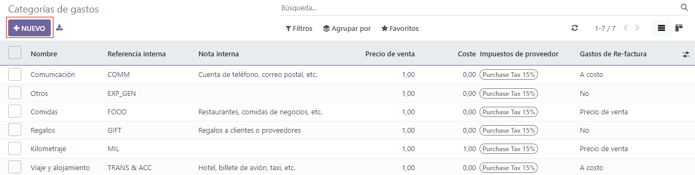

Reinvoice expenses to customers¶
While working on a project for a client, employees often have to spend their own money on various expenses related to the project.
For example, an employee may need to use their own money to pay for a hotel, while they provide an on-site service for a client. As a company, this expense should be reinvoiced to the customer. With Odoo, these kinds of expenses can quickly be reinvoiced to the customer related to the project.
Expenses application¶
To be able to reinvoice a customer for an expense, the Expenses application must be installed.
To install the Expenses application, navigate to , and click Install on the Expenses application block. When clicked, Odoo installs the application, refreshes the page, and returns to the main Odoo dashboard.
Add expenses to sales orders¶
To begin, have a sales order confirmed in the Sales app to which a reinvoiced expense can be added. Or, create a new sales order from scratch. To do that, navigate to the . Doing so reveals a blank quotation form.
Then, add a Customer, and add a product to the Order Lines tab, by clicking Add a product. Next, select a product from the drop-down menu.
Lastly, click Confirm to confirm the sales order.
With the sales order confirmed, it’s time to create an expense.
To do that, navigate to the Expenses application, by going to .
Then, from the Expenses dashboard, click New to reveal a blank expenses form.
On the expenses form, add a Description to easily reference the expense.
Then, in the Category field, select one of the following options from the drop-down menu:
Communication: any form of communication related to a project/order.
Others: expense that doesn’t fit into any other categories.
Meals: any form of meal costs related to a project/order.
Gifts: any form of gift costs related to a project/order.
Mileage: any form of mileage (gas) costs related to project/order.
Travel & Accommodation: any travel or accommodation costs related to a project/order.
Tip
New expense categories can be created from an expense form, by clicking the Category field drop-down menu, selecting View All, and clicking New from the Search:Category pop-up window.
For this sample workflow, which will reinvoice a customer for a brief hotel stay, the Category for this example is [TRANS & ACC] Travel & Accommodation.
Note
The following example requires the Sales, Accounting, and Expense apps to view/modify all the fields mentioned during the workflow.
Beneath the Category field, enter in the amount to be expensed in the Total field.
Next, designate if there are any Included taxes in the Total. If a preconfigured tax amount is selected from the Included taxes field, Odoo auto-calculates the taxed amount, based on the amount entered in the Total field.
Then, choose which Employee was responsible for the expense, and choose an option in the Paid By field: Employee (to reimburse) or Company.
In this case, our employee paid for the hotel with their own money, so the Employee (to reimburse) option is chosen.
On the right-hand side of the expenses form, the option to add a Bill Reference is available. Beneath that, the auto-populated Expense Date and Account fields are available.
Note
The Expense Date and Account field can be modified, if needed.
Next, in the Customer to Reinvoice field, click the blank field to reveal a drop-down menu. From this drop-down menu, select the appropriate sales order to which this expense should be attached. This field must be filled, in order to reinvoice a customer for an expense.
Lastly, the option to modify the Analytic Distribution and Company fields are available. These fields are not required to complete a reinvoiced expense to a customer, but are available to modify, if needed.
Also, at the bottom of the expense form, there is a Notes… section, wherein any notes related to this expense can be added, if needed.

At the top of the expense form, there are buttons to Attach Receipt, Create Report, and Split Expense.
If there is a physical or digital receipt that should be attached to the expense, click Attach Receipt.
If the cost of this expense needs to be split, click Split Expense. This feature can be used for a number of reasons (spitting expense with another employee, to accommodate different tax rates, etc.).
If neither of these options are necessary, click Create Report to lock in the expense report that was just configured.
Doing so reveals an Expense Report Summary for the new expense.
Here, once the details related to the expense have been confirmed, click Submit to Manager. This sends the expense report to the approving manager, who will review the expense.
The manager in charge of reviewing and approving the expense will inspect the details related to the expense, and if there are no issues, they will click the Approve button — which only appears on the manager’s view of the Expense Report Summary that’s been submitted to the manager by the employee.
Once approved, the buttons at the top of the Expense Report Summary change once again. At this point, the buttons at the top of the Expense Report Summary are: Post Journal Entries, Report in Next Payslip, Refuse, and Reset to Draft.

When the manager is satisfied with the Expense Report Summary, they’ll click Post Journal Entries.
Upon clicking Post Journal Entries, that button disappears, and the Analytic Distribution column in the Expense tab is filled with the sales order that was initially configured to the expense in the Customer to Reinvoice field.
Reinvoice expense¶
With those steps completed, it’s time to return to the sales order to complete the reinvoice of the expense to the customer.
To do that, navigate to , and select the appropriate sales order that should be reinvoiced for the expense.
On the sales form, the newly-configured expense is now in the Order Lines tab, with its Delivered column filled in, and ready to be invoiced.

After confirming the details of the expense, click Create Invoice at the top of the sales order. When clicked, a Create invoices pop-up window appears.

From this pop-up window, leave the Create Invoice field on the default Regular invoice option, and click Create Draft Invoice.
Doing so reveals a Customer Invoice Draft showing only the expense in the Invoice Lines tab.
If all the information related to the expense is correct, click Confirm to confirm the invoice. Doing so moves the status of the invoice from Draft to Posted.
To send the invoice to the customer, click Send & Print. Doing so reveals a Send pop-up window, with a preconfigured message and PDF invoice in the body of the message. The message can be reviewed and modified, if needed.
Once ready, click Send & Print to send the invoice to the customer. When clicked, the pop-up window disappears, and Odoo sends the message/invoice to the customer. Additionally, a PDF of the invoice is automatically downloaded for record-keeping and/or printing purposes.
Back on the Customer Invoice, click the Register Payment button when the customer pays for the invoiced expense.

When Register Payment is clicked, a Register Payment pop-up window appears. In this pop-up window, the necessary fields are auto-populated with the correct information. After reviewing the information, click Create Payment.

Once Create Payment is clicked, the pop-up window disappears, and a green In Payment banner is in the upper-right corner of the invoice, signifying this invoice is paid for in full. Thus, completing the workflow.